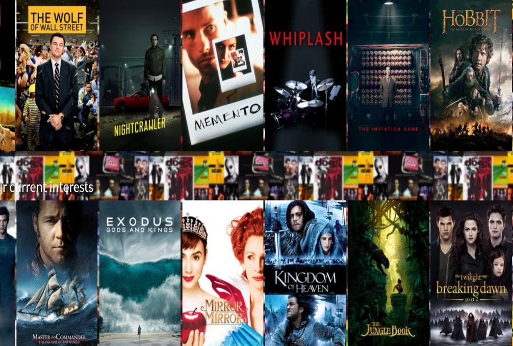
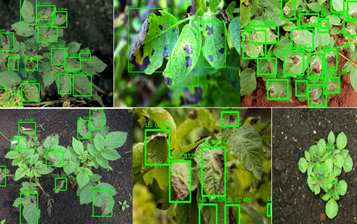
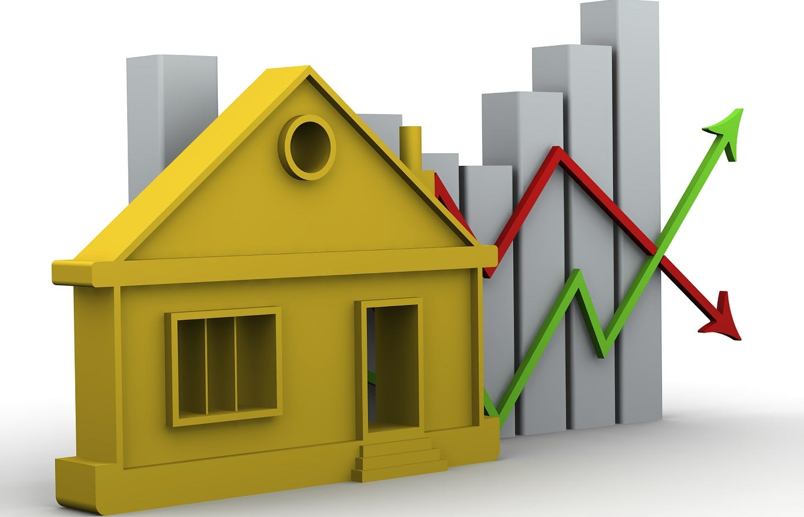

Movie Recommender System | Python
A system that predicts and recommends movies to users based on their viewing history and preferences. I utilized Python and machine learning libraries such as Pandas, NumPy, and Scikit-learn to develop the model.
The project involved significant data cleaning, feature engineering, and hyperparameter
tuning to improve the accuracy of the recommendations. I also implemented collaborative
filtering to enhance the system’s performance.

Maji-Ndogo Water Crisis | SQL
This project involved inaccurate tracking of water distribution, leading to shortages in several regions. To solve this, I used SQL to analyze the water distribution database, identifying discrepancies in allocation and usage. By creating efficient queries, I was able to pinpoint areas with excess supply and redistribute resources,
ensuring equitable water distribution across all affected regions. This SQL-driven approach quickly resolved the crisis, restoring reliable access to water.

FinTech Project | Python
Developed an AI-driven financial inclusion platform,
FinNex, using Streamlit, OpenAI, and Pandas, to promote economic empowerment in
underprivileged communities in Ghana. FinNex is designed for financial institutions to assist
in calculating flexible loan repayment plans, determining loan eligibility, and assessing loan
risk based on detailed customer data. Leveraged alternative data sources, including call credit
purchases, data bundle purchases, and mobile money transactions, to provide a
comprehensive view of financial activity and stability.
Bike Sales Report | Excel
This project focused on analyzing bike sales data by performing detailed data cleaning to ensure accuracy and
consistency. Using Excel's powerful tools, I created dynamic pivot tables and charts to uncover trends and patterns in the data. The final output included a well-structured and visually engaging dashboard, designed to effectively communicate key insights and support data-driven decision-making.

Crop Disease Detection | Python
This computer vision project focused on developing machine learning models to accurately identify diseases in crops like corn, pepper, and tomatoes in Ghana. I worked with a dataset of over 7,000 annotated images and built lightweight models suitable for low-resource smartphones. Emphasis was placed on explainability techniques such as Grad-CAM, LIME, and SHAP, ensuring the models provided interpretable predictions to support farmers in combating crop diseases effectively.

House Price Prediction
This project involved building a machine learning model to predict house prices based on various features such as location, size, and amenities. The process included data collection, cleaning, and feature engineering to prepare the dataset for analysis. Using regression techniques, the model was trained and evaluated to ensure accuracy. The project demonstrated the ability to leverage data-driven insights for informed decision-making in the real estate market.